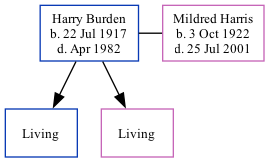

Harry Edgar Burden 1917 - 1982
[ Home ] | [ Calendar ] | [ Surnames Index ] | [ Family History ]Harry Burden, the husband of Mildred Betty Harris (the fifth cousin once-removed on the mother's side of Nigel Horne), was born in Royal Oak, Michigan, USA on Jul 22, 19171,2,3 and. He married Mildred (with whom he had 2 surviving children Danny and Beverley Louise) in Allen, Indiana, USA on Jan 11, 19412.
He died in Apr 1982 in Fort Wayne, Indiana1,3.
Citations
- Social Security Death Index - Findmypast
- United States Marriages - Findmypast
- United States Obituary Notices - Findmypast
Media
United States Marriages - FS/MAR/35576045/1
United States Marriages - R_1072304436
United States Marriages - R_1072304436/1
Social Security Death Index - USBMD/SSDI/305164513
United States Obituary Notices - US/TRIB/034784473
Family Tree
Generated by ged2site. Last updated on Nov 13, 2024